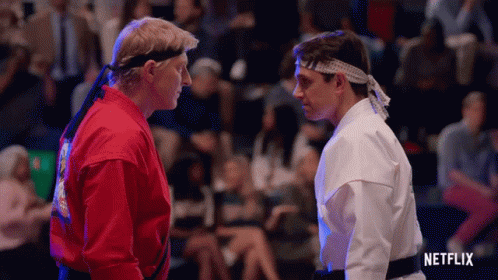
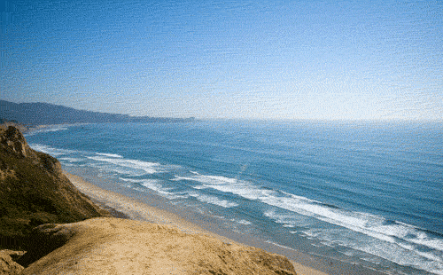
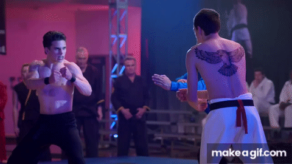
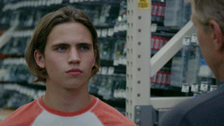

Após uma vitória épica no Torneio All Valley, você descobre a existência do lendário Torneio Sekai Taikai. Conhecido por reunir os maiores mestres de karatê do mundo, este torneio oferece uma chance única de provar suas habilidades. Sua jornada para se qualificar começa agora, enfrentando desafios que testarão sua coragem e determinação. Está pronto para começar?
Você decide que está pronto para o desafio e precisa encontrar uma pista crucial em Los Angeles. Duas opções se apresentam: o temido Cobra Kai Dojo, conhecido por seu treinamento intenso e competitivo, ou o pacífico Miyagi-Do Dojo, famoso por seu equilíbrio e filosofia de vida. Onde você começará sua busca?
Você decide que ainda não está pronto e prefere treinar mais antes de enfrentar o desafio. Durante o treinamento, você reflete sobre o que teria encontrado no caminho para o Torneio Sekai Taikai e se prepara para futuros desafios.

No Cobra Kai Dojo, você é recebido com um olhar desafiador e uma aura de competição. Após uma breve conversa com o mestre, você descobre que a primeira pista leva a um desafio na região montanhosa da Califórnia. Preparado para essa nova etapa?
No Miyagi-Do Dojo, você encontra uma pista que o direciona para a mesma região montanhosa da Califórnia. Agora é hora de enfrentar o próximo desafio, que exigirá tanto habilidade quanto sabedoria.
Chegando nas montanhas da Califórnia, você encontra um dojo isolado. O treinamento aqui é rigoroso e testará seus limites físicos e mentais. Você está pronto para enfrentar este intenso treinamento?
Você enfrenta o treinamento com determinação e sucesso. Agora, a próxima etapa é viajar para o Japão, onde o Torneio Sekai Taikai será realizado. Sua jornada está quase completa.
Decidindo que o treinamento é muito difícil, você volta para casa. Enquanto reflete sobre sua decisão, pensa sobre o que poderia ter conquistado e se prepara para futuros desafios.
Chegando ao Japão, você descobre o local do Torneio Sekai Taikai. O ambiente está repleto de lutadores e espectadores ansiosos. Agora, você deve escolher o caminho para a arena do torneio, onde enfrentará os melhores lutadores do mundo. Qual caminho você escolherá?
O caminho principal leva você diretamente à arena do torneio. Após uma série de lutas intensas e emocionantes, você se sagra campeão do Torneio Sekai Taikai, mostrando que é um verdadeiro mestre do karatê!

O caminho alternativo é desafiador e sinuoso, mas oferece uma nova perspectiva sobre a arte do karatê. Embora você não chegue à arena, adquire valiosas lições e uma nova visão sobre a prática. Com uma nova sabedoria, retorna para casa.